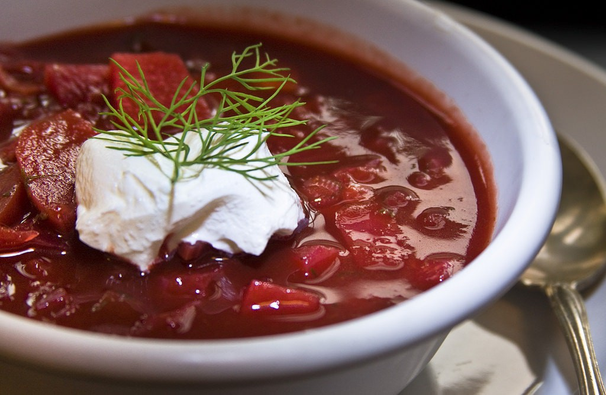
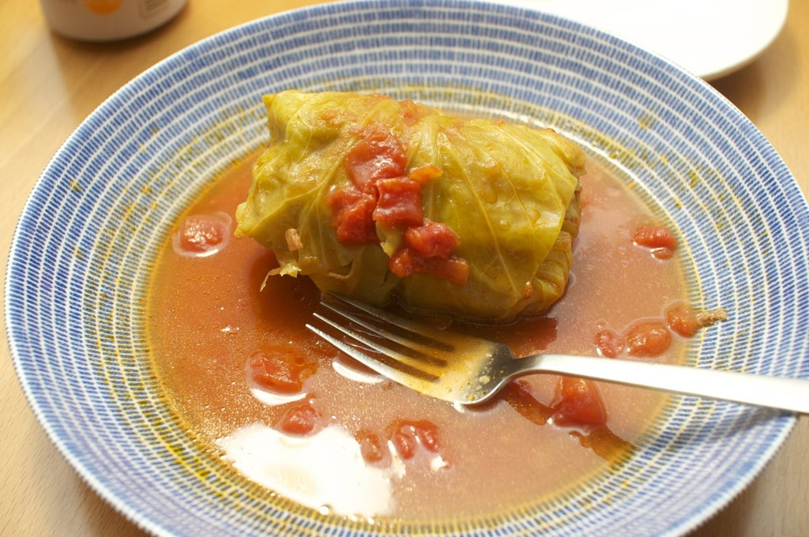

My favorite dishes
Today I want to tell you about my favourite dishes.
First, Borscht with garlic fritters.
A lot of people knows what it is and many people around the world have fallen in love with this iconic beet soup.
Classic Borscht Recipe (Beet Soup)
- 3 medium beets peeled and grated
- 2 carrots peeled and thinly sliced
- 1 medium onion finely chopped
- 1 large garlic clove pressed

Varenyky
Ingredients
- 5 cups all-purpose flour
- 2 tablespoons butter, softened
- 1 cup evaporated milk
- cup water
- Filling

Stuffed cabbage rolls
Traditional stuffed cabbage rolls, golubtsi, take many hours to prepare properly. There are two ways to make them: bake them in the oven or stew them in a pan.
Ingredients
- cup water
- cup uncooked white rice
- 8 large leaf (blank)s cabbage leaves
- 1 pound lean ground beef
- cup chopped onion

Syrnyky
Fans of sweet flavors for breakfast will fall in love with syrnyky. Made of cottage cheese, flour, eggs and sugar, the dish is nourishing and airy.
Ingredients
- 15 oz (about 2 cups) farmers cheese, homemade (aka Tvoroh) or storebought
- 4 large eggs
- 3/4 cups all-purpose flour, plus about 1/2 cup more for dredging
- 3 Tbsp sugar
- 1 tsp baking soda
- 1 tsp white vinegar